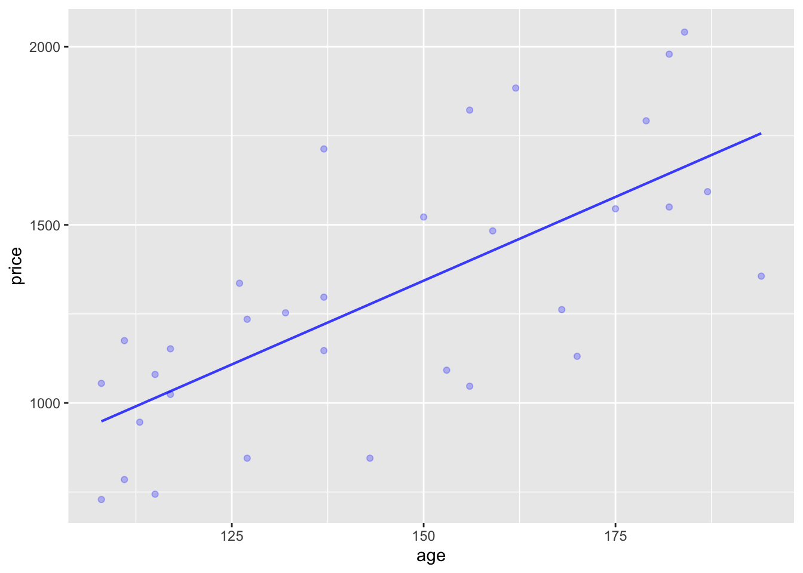

mod1 <- lm(Height ~ Age, data = NHANES::NHANES)
model_plot(mod1, data_alpha=0.05)Warning: Removed 353 rows containing missing values (`geom_point()`).
Signal and noise
Command patterns:
DF <- model_eval(MODEL)DF %>% summarize(NM = var(VAR) [, MORE] )model_eval(MODEL, VAR = VALUE [, MORE] )MODEL %>% R2()Every regression model involves a response variable, which Lessons in Statistical Thinking always plots on the vertical axis. Most of the regression models we will consider in these Lessons have one or two explanatory variables, although sometimes there will be more than two and sometimes none at all.
It is worth memorizing the forms of the tilde-expression specifications of the zero-, one-, and two-explanatory models, as well as their shapes. For this purpose, we’ll write the forms using five generic variable names. In practice, you will replace these generic names with specific names from the data frame of interest.
y — a quantitative response variable (which might be the result of a zero-one transformation).
x and z — quantitative explanatory variables
g and h — categorical explanatory variables.
| Model specification | Shape |
|---|---|
y ~ 1 |
A line with slope zero. |
y ~ x |
A line with possibly non-zero slope. |
y ~ g |
A value for each level of g. |
y ~ x + g |
Separate lines for each level of g, all with the same slope. |
y ~ x + z |
Parallel, evenly spaced lines. |
y ~ g + h |
For each level of g, a set of spaced values, one for each level of h. The h-spacing will be the same for every level of g. |
Note: It doesn’t matter what order the explanatory variables are given in. The name of the response variable is always on the left-hand side of the tilde expression.
Do Exercise 21.4.
By fitting a regression model, we divide the response variable into two components: a signal component and a noise component. The model specification tells what sort of signal to look for. For instance, the Clock_auction data frame records the sales price of antique grandfather clocks sold at auction. Presumably, the price reflects some feature of the clock itself as well as the market conditions. We have only the variables age and bidders to represent the the value of the clock and the market conditions.
Using lm() with the specification price ~ age directs the computer to look for a signal in the form of a straight-line relationship between age and price. The estimated noise is the difference between the response variable values (price) and the signal.
price? (Use the variance to measure variation.)ANSWER:
price ~ age, then plot with model_plot(). Describe the pattern between price and age you see in the plot.ANSWER:
Use model_eval() to find the model output for each clock for the model you constructed in (2).
.output? How does it compare to the variance of the response variable price?.resid. How much noise is there for price ~ age?.output, and the variance of the noise.ANSWER:
R2() to summarize the model you constructed in (2). Demonstrate arithmetically the relationship between R2 and variances of the response variable and the model .output.ANSWER:
.resid from part (3)?ANSWER:
dag_10 has a simple structure, with nodes a through f each contributing to the value of y. Use sample() to generate a sample of size 1000. Using your sample, construct several models and calculate the R2 statistic.
y ~ 1.y ~ ay ~ by ~ a + bANSWER:
ANSWER:
y ~ a + b + c versus y ~ c + a + b.)ANSWER:
Write a sentence or two explaining what each of the following terms refers to.
Here’s a model of human height versus age based on the NHANES::NHANES data frame. (The package NHANES has the data frame which itself is called NHANES, so the full name is NHANES::NHANES.)
mod1 <- lm(Height ~ Age, data = NHANES::NHANES)
model_plot(mod1, data_alpha=0.05)Warning: Removed 353 rows containing missing values (`geom_point()`).
Age and Height? Explain using simple biological terms what the problem is with the straight-line model.ANSWER:
There are several modeling techniques for constructing models that are more flexible than a straight line. We won’t be using them in Math 300, but we want to point out that they exist. Try this one:
mod2 <- lm(Height ~ splines::ns(Age,5) * Gender, data = NHANES::NHANES)
model_plot(mod2, data_alpha=0.05)Warning: Ignoring unknown aesthetics: fillWarning: Removed 353 rows containing missing values (`geom_point()`).
ANSWER: